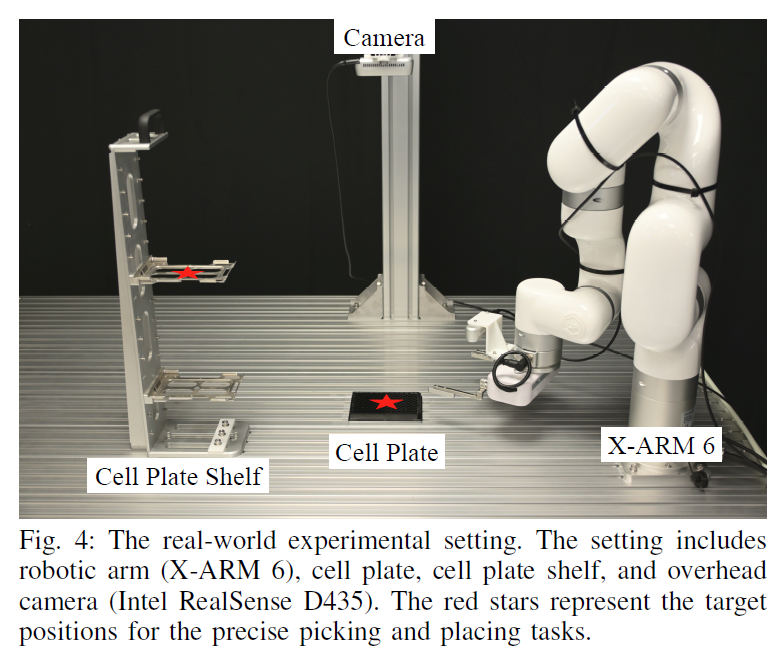

Experimental setup and tasks. We evaluate RM-RL on a real-world precision pick-and-place benchmark using an X-ARM 6 with an overhead camera. Each trial starts from a slightly perturbed pose, and the policy predicts small translation and yaw corrections to place a cell plate into a shelf slot. We report accuracy in \( \Delta x \), \( \Delta y \), and \( \Delta \psi \), along with success rates over repeated trials, compared against online RL baselines and replay-buffer variants.

The following videos summarize qualitative performance. originRL and RL with Replay Buffer show failed cases of the original algorithm, while Pretrain + RL and RM-RL (ours) demonstrate successful placement with the proposed method.
origin RL (baseline). Failed case of the original RL.
origin RL with Replay Buffer. Failed case of the original RL with replay buffer.
RM-RL (ours). Successful demo of the proposed RM-RL method.
Pretrain + RL (ours). Successful demo of the proposed pretrained RM-RL method.